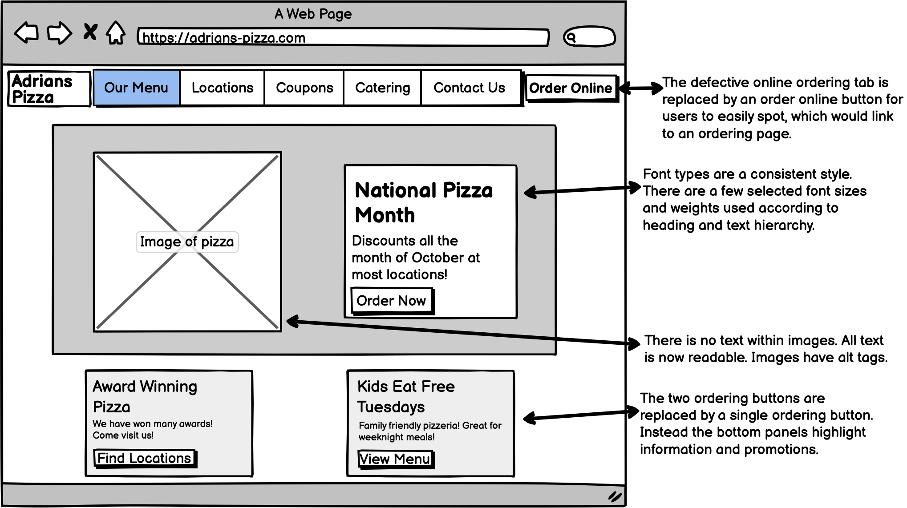
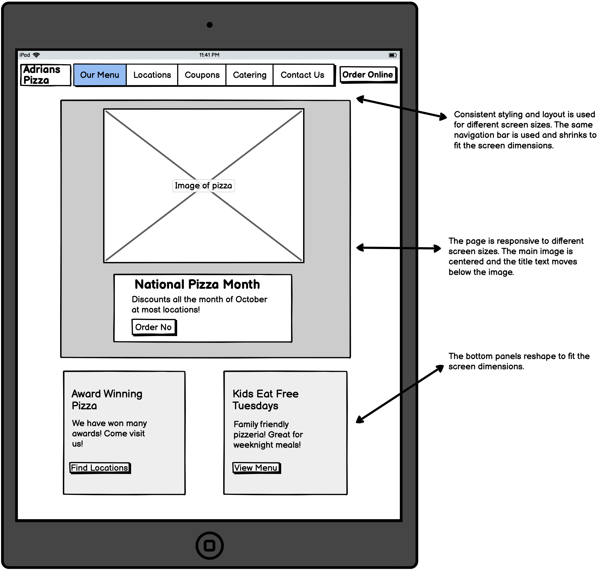

Responsive Redesign
Link to original page: Adrian's Pizza
For this project, my goal was to redesign a website that had serious flaws related to usability and accessibility standards. I went through the entire workflow of a redesign, starting from identifying flaws, creating low-fidelity sketches, composing a style guide, creating high-fidelity prototypes for different screen sizes, and finally a building redesigned website. I chose to redesign a local pizza restaurant’s website called Adrian’s Pizza because I have interacted with it in the past and was not satisfied with my experience, so I think this website could benefit from a redesign.
Usability issues
There are a few usability issues I found with the website related to efficiency, learnability, and memorability.
Accessibility Testing
WebAIM WAVE, a site with evaluation tools for assessing website accessibility to individuals with disabilities, found several accessibility issues with the website. Here are a few that stood out:Low Fidelity Wireframes
To begin my redesign process, I began by sketching some low fidelity wireframes of a redesigned website for multiple screen sizes: computer, ipad, and phone.Computer
Ipad
Phone

Style Guide
Next, I constructed a style guide to use when constructing high-fidelity prototypes. It details colors, heading and body text styles, and buttons and tabs.
High Fidelity Prototyping
After constructing a style guide, I used it to compose high-fidelity protoptypes, again for each of the screen sizes.Computer

Ipad

Phone

Final Redesigned Page
Finally, I created a responsive webpage according to my high-fidelity prototypes. The final result can be viewed here:Link to redesigned page: Adrian's Pizza